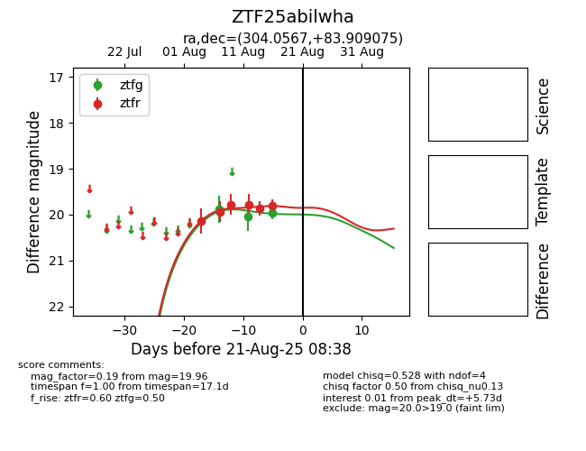

Target ZTF25abilwha at 2025-08-21 08:38, see:
FINK: fink-portal.org/ZTF25abilwha
Lasair: lasair-ztf.lsst.ac.uk/objects/ZTF25abilwha
ALeRCE: alerce.online/object/ZTF25abilwha
alt names
ZTF25abilwha (ztf,alerce)
coordinates:
equatorial (ra, dec) = (304.0567,+83.90908)
galactic (l, b) = (116.6761,+24.78816)
photometry
last ztfg=19.96, ztfr=19.80
3 ztfg, 6 ztfr detections
